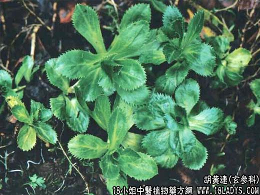

【中药概述】
胡黄连为玄参科草本植物胡黄连的根茎。苦、寒。归肝、胃、大肠经。
1．清退虚热：阴虚发热（下午发热、手足心热、两颧发红），劳热骨蒸，盗汗，及小儿疳热，消化不良，腹胀体瘦等，常配地骨皮，白薇，百部，沙参，青蒿，炙鳖甲，秦艽，生地，元参等。
2．湿热泻痢：用于湿热痢疾及痔疮等症，常配木香，槟榔，白芍，当归，白头翁等。如（<博济方>胡黄连丸）、（<外科正宗>黄连闭管丸）。
【药效鉴别】
胡黄连清退虚热而治骨蒸疳热，是亦虚热、实热两皆可用之品。为治小儿疳热及阴虚发热要药。
【药理作用】
对金黄色葡萄球菌、卡他球菌、宋内氏痢疾杆菌有抑制作用。
【化学成分】
含胡黄连素3.4％和D-甘露醇0.5％、胡黄连醇，及香荚兰乙酮等。
【用量用法】
8——15g，水煎服，或入丸、散剂。